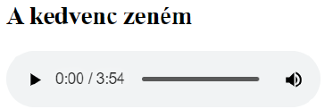
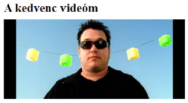
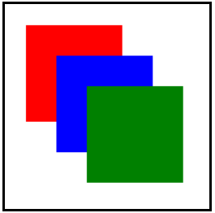
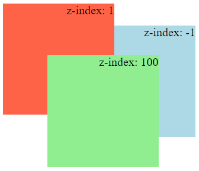
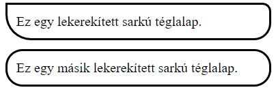
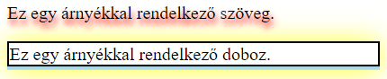
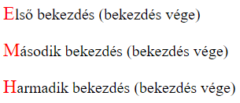
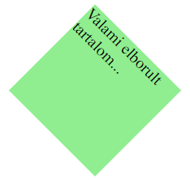

5. gyakorlat¶
A gyakorlat anyaga¶
A HTML és CSS további lehetőségei
A HTML további lehetőségei¶
Multimédia elemek¶
A HTML5 szabvány alapértelmezés szerint támogatja a multimédiás tartalmak (hangfájlok, videók) beágyazását a weboldalon belül.
Az <audio>...</audio> taggel hangállományokat helyezhetünk el egy weboldalon. A tagnek adható controls attribútummal vezérlőgombokat adhatunk a beágyazott hangfájlnak (pl. elindítás és hangerő szabályozása gombok).
A <source/> páratlan tag segítségével több alternatív hangállományt is megadhatunk. Ezek közül a böngésző a legelső, általa felismerhetőt fogja beágyazni a weboldalra. A tag két fontos attribútuma:
src: a beágyazni kívánt hangfájl elérési útvonalatype: az állomány MIME-típusa.
Hangállományok esetén a type attribútummal megadott MIME-típus az audio/mpeg, audio/ogg vagy audio/wav értékek valamelyike lehet.
Példa: Hangállomány beágyazása egy weboldalra
1 2 3 4 5 6 | |

A <video>...</video> tag videóállományok beágyazására szolgál. A controls attribútumot itt is használhatjuk vezérlőgombok megjelenítésére. A width és height attribútumokkal megadható a beágyazott videó szélessége és magassága (pixelben).
Több alternatív videóállomány megadására a korábban tárgyalt <source/> taget használjuk. A tag type attribútumával megadható MIME-típus a video/mp4, video/ogg vagy video/webm értékek valamelyike lehet.
Példa: Videóállomány beágyazása egy weboldalra
1 2 3 4 5 6 | |

Canvas¶
A <canvas>...</canvas> tagpár egy téglalap alakú vászon beszúrására szolgál, amelyre JavaScript segítségével rajzokat, animációkat és játékokat készíthetünk. A width és height attribútumokkal szabályozhatjuk a vászon szélességét és magasságát.
Ahhoz, hogy egy vászonra rajzolni tudjunk, szükséges a JavaScript ismerete, ami már túlmutat ennek a kurzusnak a tananyagán (viszont például a Multimédia kurzus tárgyalja a canvas-alapú JavaScriptet).
Példa: Egy egyszerű canvas-es ábra elkészítése
1 2 3 4 5 6 7 8 9 10 11 12 13 14 15 16 17 18 19 20 21 22 23 24 25 | |

A CSS további lehetőségei¶
A z-index tulajdonság¶
A HTML elemek pozicionálásakor előfordulhat, hogy bizonyos elemek takarják egymást. Alapértelmezett módon az egymást takaró HTML objektumok közül mindig a kódban később szereplő elem kerül előtérbe.
Az elemek mélységi sorrendjét a z-index CSS tulajdonsággal szabályozhatjuk. Ennek értéke tetszőleges egész szám lehet (akár negatív szám is). Ekkor az egymást takaró elemek közül az kerül előtérbe, amelynek nagyobb a z-index értéke. Az azonos z-index értékkel rendelkező elemek esetén a kódban később szereplő elem fogja takarni a másikat.
Példa: A z-index tulajdonság használata
1 2 3 4 5 6 7 8 9 10 11 12 13 14 15 16 17 18 | |

Lekerekített sarkok¶
A border-radius CSS tulajdonsággal lekerekített sarkú szegélyt adhatunk egy HTML objektumnak. A tulajdonság értékeként 4 paraméter adható meg: sorban a bal felső, jobb felső, jobb alsó és bal alsó sarkok sugara. Nem megadott paraméter esetén a szemközti saroktól öröklődik a sugár értéke.
Példa: A border-radius tulajdonság használata
1 2 3 4 5 6 7 8 9 10 11 12 13 14 15 16 | |

Árnyékok¶
CSS-ben a text-shadow tulajdonsággal adhatunk egy szövegnek árnyékot. A tulajdonság értékeként rendre 4 paraméter adható meg: a vízszintes eltolás, a függőleges eltolás, az árnyék elmosódásának mértéke és az árnyék színe. Az utolsó két paraméter elhagyható.
A box-shadow tulajdonsággal dobozszerű elemeknek is adható árnyék. Ennek értékeként rendre 5 paramétert adhatunk meg: a vízszintes eltolást, a függőleges eltolást, az elmosódás mértékét, az árnyék kiterjedését és az árnyék színét. Az utolsó három paraméter elhagyható.
Egy szöveghez vagy egy dobozhoz akár több árnyék is megadható, vesszővel elválasztva.
Példa: Árnyékok használata
1 2 3 4 5 6 7 8 9 10 11 12 13 14 15 | |

Pseudo-elemek¶
Ha egy HTML objektum egy specifikus részét szeretnénk formázni (pl. egy szöveg első betűjét vagy első sorát), akkor használjuk a CSS pseudo-elemeket. Ezeket a szelektor után, dupla kettősponttal adjuk meg: szelektor::pseudoelem.
A fontosabb pseudo-elemek:
::before: generált tartalom közvetlenül az elem előtt::after: generált tartalom közvetlenül az elem után::selection: a kijelölt szövegrész::first-letter: a szöveg első karaktere::first-line: a szöveg első sora.
Példa: Pseudo-elemek használata
1 2 3 4 5 6 7 8 9 10 11 12 13 14 15 16 17 18 19 20 21 22 | |

Megjegyzés
Ne tévesszük össze a pseudo-elemeket a korábban tanult pseudo-class-okkal! Emlékeztetőül: a pseudo-elemekkel ellentétben a pseudo-class-ok állapotuk alapján jelölnek ki HTML objektumokat. Például a :hover pseudo-class-szal megadott formázások akkor lesznek érvényesek, ha a kurzor az objektum fölött áll.
A régebbi CSS verziókban a pseudo-elemeket és a pseudo-class-okat is 1 darab kettőspont után adtuk meg. A dupla kettőspontos szintaxis CSS3-ban került bevezetésre a pseudo-elemek megadására, ugyanakkor kompatibilitási okok miatt a legtöbb böngésző a régebbi, egyszeres kettőspontos szintaxist is támogatja ezeknél.
Transzformálás¶
A transform CSS tulajdonsággal 2-dimenziós, illetve 3-dimenziós transzformálásokat adhatunk HTML elemeknek. A transzformálás lehetőséget nyújt többek között elemek eltolására, forgatására, skálázására és elferdítésére.
A tulajdonság néhány fontosabb értéke:
translate(x, y): eltolja az elemet a jelenlegi helyéhez képestx: vízszintes eltolás (pozitív érték esetén jobbra, negatív érték esetén balra tolja el)y: függőleges eltolás (pozitív érték esetén lefelé, negatív érték esetén felfelé tolja el)
rotate(ndeg): elforgatja az elemetnfokkal (pozitívnesetén az óramutató járásával megegyező, negatívnesetén az óramutató járásával ellenkező irányba forgat)scale(w, h): a megadott szélesség- (w) és magasság-aránynak (h) megfelelően nyújtja vagy zsugorítja az elemetscaleX(n):n-szeresére nyújtja vagy zsugorítja az elem szélességétscaleY(n):n-szeresére nyújtja vagy zsugorítja az elem magasságát
skew(xdeg, ydeg): elferdíti az elemet (az X-tengely menténxfokkal, az Y-tengely mentényfokkal)skewX(ndeg): elferdíti az elemet az X-tengely menténnfokkalskewY(ndeg): elferdíti az elemet az Y-tengely menténnfokkal
matrix(scaleX, skewY, skewX, scaleY, translateX, translateY): a fenti tulajdonságok összevont megadásarotateX(ndeg): elforgatja az elemet az X-tengely körülnfokkal (3D transzformáció)rotateY(ndeg): elforgatja az elemet az Y-tengely körülnfokkal (3D transzformáció)rotateZ(ndeg): elforgatja az elemet a Z-tengely körülnfokkal (3D transzformáció).
Példa: Egy HTML elem vízszintes és függőleges középre igazítása a weboldalon belül
1 2 3 4 5 6 7 8 9 10 11 12 13 14 15 16 17 18 19 20 21 22 23 24 25 | |
Példa: Egy HTML elem eltolása és 45 fokkal való elforgatása
1 2 3 4 5 6 7 8 9 10 11 12 13 14 15 16 17 | |

Megjegyzés
A transzformálás a régebbi böngészőkben nem érhető el.
Áttűnések¶
A 3. gyakorlaton említettük, hogy a HTML objektumoknak különböző állapotai lehetnek (pl. ha az objektum fölé visszük az egeret, vagy ha az objektumra kattintunk). Az áttűnések segítségével az egyes állapotok közötti átmeneteket befolyásolhatjuk.
CSS-ben áttűnéseket a transition tulajdonsággal készíthetünk. Értékéül két jellemzőt kell megadnunk: a CSS tulajdonságot, ami az áttűnés során megváltozik, valamint az áttűnéshez szükséges időt (másodpercben). A transition tulajdonság értékéül több átmenet is megadható, vesszővel elválasztva.
A transition-timing-function tulajdonsággal az átmenet időbeli lefolyásának jellemzőjét is beállíthatjuk:
ease: kezdetben lassú, majd gyors, végül pedig ismét lassú állapotváltáslinear: egyenletes sebességű állapotváltásease-in: gyorsuló állapotváltásease-out: lassuló állapotváltásease-in-out: gyorsuló, majd lassuló állapotváltás.
Példa: Ha a kurzor a példában szereplő <div> fölött áll, akkor megnöveljük az elem méreteit. Az áttűnéseknek köszönhetően ez a méretnövelés nem hirtelen történik, hanem szépen, fokozatosan megy végbe. (A kód működése kipróbálható itt)
1 2 3 4 5 6 7 8 9 10 11 12 13 14 15 16 17 18 19 20 21 22 | |
Megjegyzés
Az áttűnések a régebbi böngészőkben nem érhetők el.
Animációk¶
A CSS lehetőséget biztosít animációk készítésére is. Egy animációt a következő szintaxissal hozhatunk létre:
1 2 3 4 | |
Ha nem csak az animáció kezdetén és végén fennálló stílust szeretnénk megadni, akkor a from és to helyett megadhatók százalékértékek is. Ezek segítségével részletesebben is személyre szabhatjuk egy animáció lefolyását.
1 2 3 4 5 | |
Ahhoz, hogy egy általunk létrehozott animáció működésbe lépjen, hozzá kell azt társítanunk egy elemhez. Az animálni kívánt elemnek megadható CSS tulajdonságok:
animation-name: az animáció neve (ami a@keyframesután szerepel)animation-duration: az animáció hosszaanimation-delay: az animáció kezdete előtti késleltetés hosszaanimation-iteration-count: hányszor játszódjon le az animáció- értékéül megadható egy szám vagy az
infinite(végtelen) kulcsszó
- értékéül megadható egy szám vagy az
animation-timing-function: az animáció időbeli lefolyásának jellemzői- a
transition-timing-function-nál felsorolt értékek itt is használhatók
- a
animation-direction: az animáció irányanormal: az animáció előrefelé lesz lejátszva (alapértelmezett)reverse: az animáció visszafelé lesz lejátszvaalternate: az animáció először előrefelé, majd visszafelé lesz lejátszva
- a fenti tulajdonságok összevonva is megadhatók:
animation: [animation-name] [animation-duration] [animation-timing-function] [animation-delay] [animation-iteration-count] [animation-direction].
Példa: Folyamatosan váltakozó háttérszín, és beúszás effektus megvalósítása animációkkal (A kód működése kipróbálható itt)
1 2 3 4 5 6 7 8 9 10 11 12 13 14 15 16 17 18 19 20 21 22 23 24 25 26 27 28 29 30 31 32 33 34 35 36 37 38 | |
Megjegyzés
Az animációk a régebbi böngészőkben nem érhetők el.
Media query-k¶
A webfejlesztés során felmerülhet az igény arra, hogy néhány CSS formázást csak bizonyos médiatípusok és paraméterek esetén végezzünk el. Erre egy tipikus példa, amikor különféle eszközökre és felbontásokra szeretnénk optimalizálni a weboldalunk megjelenését.
A CSS3 media query-k segítségével lehetőségünk van olyan CSS formázásokat megadni, amelyek csak bizonyos feltételek teljesülése esetén lesznek érvényesek. A media query-k szintaxisa:
1 2 3 | |
- A
mediatypeazt a médiatípust jelöli, amire elvégezzük a formázást. Lehetséges értékei:screen(számítógépek, tabletek, okostelefonok stb. képernyője),print(nyomtató),speech(felolvasóprogram),all(minden médiatípus). - A
mediafeaturehelyén adjuk meg a feltételt, ami mellett elvégezzük a formázást. - A
notkulcsszó az egész media query jelentését negálja. - Az
onlykulcsszó a régi, CSS3 media query-ket nem ismerő böngészőknél nem végzi el a formázást. Használatának a modern böngészőkben nincs hatása. - Az
andkulcsszó összeköti a feltételt (mediafeature) a médiatípussal (mediatype) és/vagy további feltételekkel. - A
not,onlyésandkulcsszavak használata opcionális. Ugyanakkor ha anotvagyonlykulcsszavakat használjuk, akkor kötelezően meg kell adni a médiatípust is!
Példa: Egy media query, amely a 600 pixelnél nem szélesebb képernyők esetén megszünteti a kép úsztatását, és középre igazítja a képet (A kód működése kipróbálható itt)
1 2 3 4 5 6 7 8 9 10 11 12 13 14 15 16 17 18 19 20 21 22 23 24 25 | |
A CSS media query-k segítségével nyomtatási stíluslapot is készíthetünk egy weboldalhoz. A @media print utasítással olyan formázásokat adhatunk meg, amelyek csak nyomtatás esetén lesznek érvényesek.
Néhány fontosabb javaslat, lehetőség nyomtatási stíluslapok használata esetén:
- A hosszúsággal kapcsolatos értékek megadására érdemes a
pt(pont) mértékegységet használni, ugyanis ez kifejezetten nyomtatásra lett kitalálva. - A
page-break-before,page-break-afteréspage-break-insidetulajdonságokkal szabályozhatjuk az oldaltöréseket. - A
@pagedirektíva segítségével beállíthatjuk a nyomtatási margókat.
Példa: Egy egyszerű nyomtatási stíluslap
1 2 3 4 5 6 7 8 9 10 11 12 13 14 15 16 17 18 19 20 21 | |
További hasznos ismeretek¶
- HTML képtérképek
- Google Fonts betűtípusok használata
- Lenyíló menü készítése
- Hasábolás, több oszlopos elrendezés
- Elemek számozása
- CSS flexbox
- CSS grid